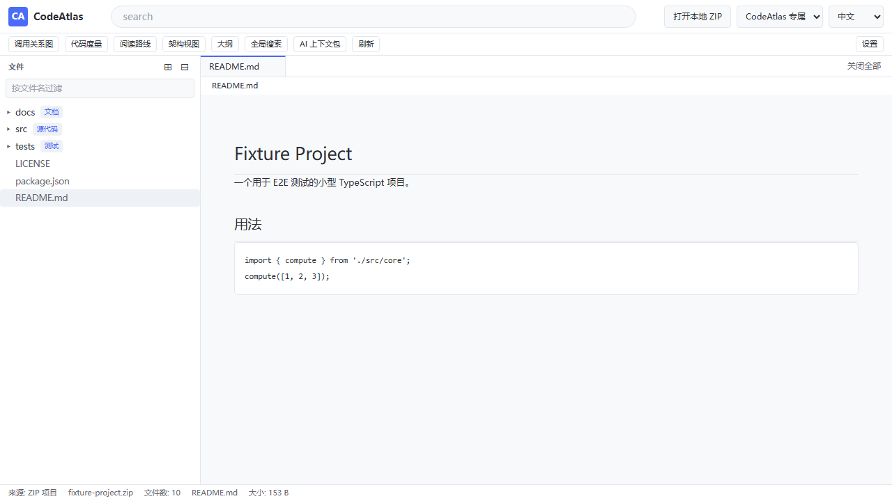
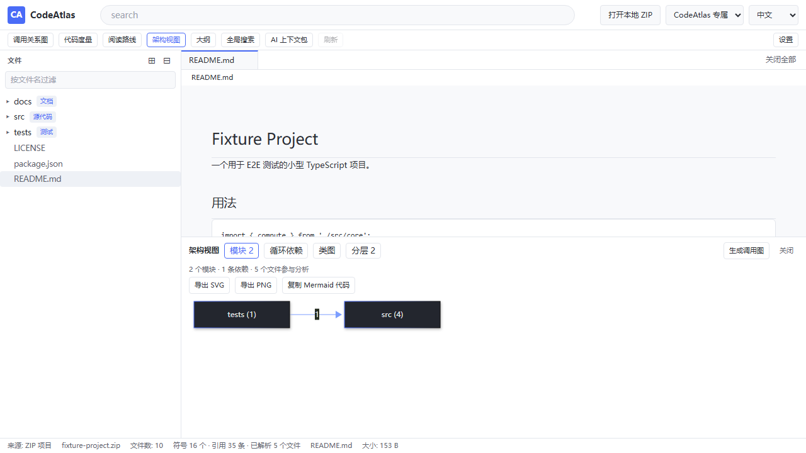
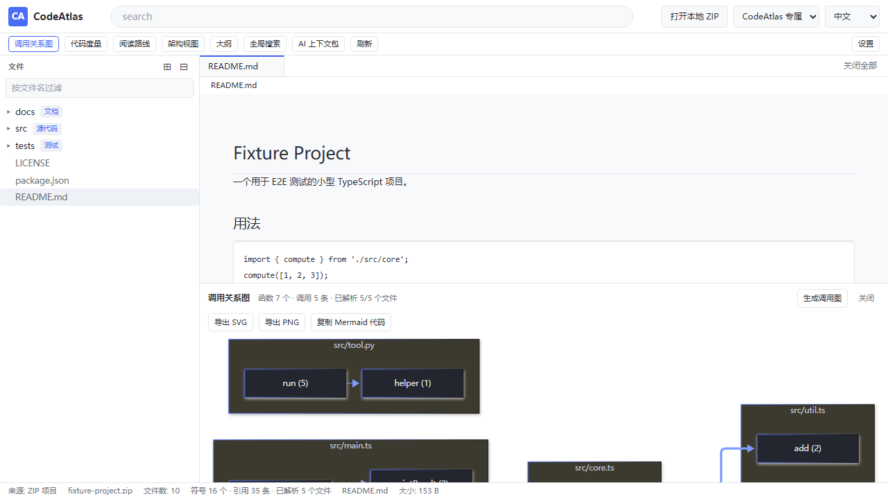
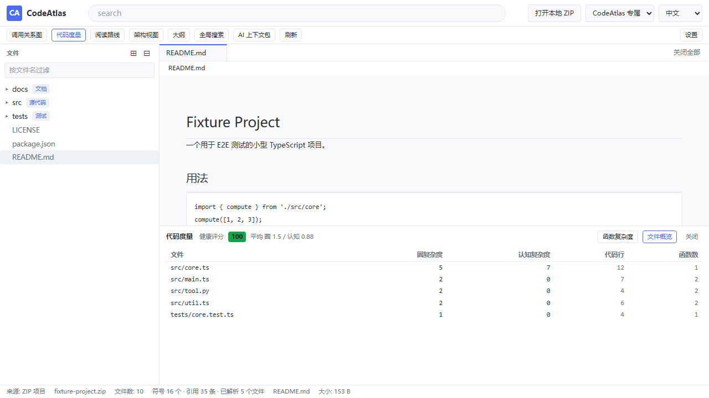
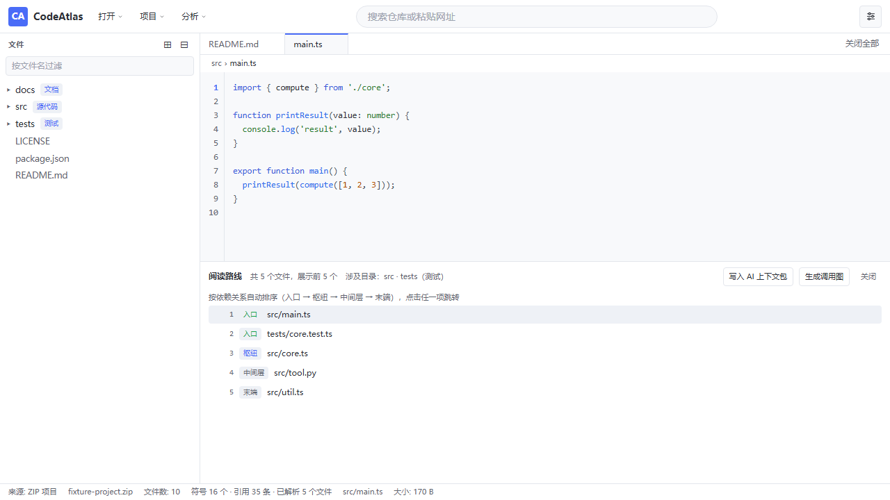
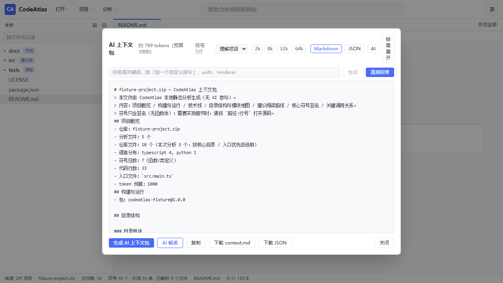

为代码画一张可交互的地图：目录是地形，调用关系是道路， 阅读路线是导航，上下文包是交给模型的旅行指南。
读懂一个陌生仓库所需的一切，放在同一个窗口里。全部由确定性静态分析得出，可离线、可复现。
没有 AI 也能独立工作：AST 解析 + 启发式规则 + 图算法，全部在本地跑完。
索引不再抽样：目录/ 给目录摘要，index:文件 给该文件全部符号，路径:行号 给代码。任意符号都可达，不再受"包里有没有它"限制。
实时显示「会话多少 token · 展开几处 · 相比整份读入省多少倍」。片段超预算会自动淘汰最不值钱的，并如实告诉模型"这些内容已移出窗口"。
输入任务点「直接回答」：自动挑包形态 → 生成 → 追问 → 自动展开。从四次点击变一次，模型拿到的上下文也更贴合问题。
折叠、按名过滤，并自动标注目录用途（src/ → 源代码、.github/ → CI 配置）。30 条规则 + 内容启发式，不靠猜。
自动排「先读哪几个文件」：入口 → 枢纽 → 中间层 → 末端。依赖图跑 PageRank，树节点带序号角标。
Ctrl+K 统一入口，命令 / 文件 / 符号一起模糊搜索；Ctrl+T 直接跳到符号定义。自研子序列匹配，零依赖。
模块级依赖图、循环依赖检测（Tarjan 强连通分量）、类图（继承 / 实现）、按用途分层。
函数级调用图，按文件分组；导出 SVG / PNG，或复制 Mermaid 源码贴进任何文档。同名符号多义时宁可少连，不乱连。
Ctrl+单击 或 F12 转到定义，一键列出全部引用位置（文件:行号）。自研 scope graph 索引。
圈复杂度（McCabe）、认知复杂度（SonarSource 口径）、SLOC、健康评分。单次 AST 遍历算出全部指标，嵌套闭包不重复计。
分析结果按文件内容哈希存进 IndexedDB。二次打开同一仓库跳过 AST 解析直接复用，状态栏显示命中数。
正则搜索跑在 Web Worker 里，10 秒超时自动终止；再大的仓库也不卡界面。
一个窗口开多个项目，标签切换，各自的浏览状态与分析结果互不干扰；重启后自动恢复上次的项目。
把分析结果导出成单文件 HTML：内联样式与 SVG 图，直接发给人看，不需要对方装任何东西。
一键生成 token 预算内的项目摘要：概览 / 构建与运行 + 技术栈（读 package.json）/
模块地图 / 阅读路线 / 核心符号签名 / 关键调用关系。按 PageRank 排序后用二分裁剪到预算内，
对话框内置 2k / 8k / 32k / 64k 预设。可直接复制给 Cursor、Trae、WorkBuddy 等工具，
也可以在本应用内直接交给模型解读。
不是聊天框套壳。模型拿到的是已经结构化、按重要性排过序的上下文，而不是一堆原始文件。
本地 Ollama：默认 127.0.0.1:11434，代码不出本机，断网可用。
OpenAI 兼容 API：OpenAI、DeepSeek 或任何自建网关，填 baseURL + 模型名即可。
两条通道都是手写的流式解析（NDJSON / SSE），不引入任何 SDK，安装包体积不变。
① 这个项目在做什么 ② 模块分工 ③ 新人阅读顺序（5–8 个文件 + 为什么）④ 风险点（循环依赖、巨型函数）。 指令里明确要求不得编造上下文里没有的文件和依赖。
分析面板里生成，按预算裁剪完成
流式输出，可随时停止
结果可复制，也可留在面板里对照
截图由 E2E 测试自动生成，所以和当前版本始终一致。






| 输入 | 用法 |
|---|---|
| GitHub 网址 | https://github.com/facebook/react —— 也支持 /tree/分支/子目录、.git 结尾与 SSH 形态 |
| 仓库简写 | facebook/react，默认分支直接加载 |
| 仓库名搜索 | 输入 react 回车，下拉按 star 排序的前 10 条，方向键选择 |
| 本地 ZIP / 目录 | 拖入 .zip 或文件夹（桌面端），每个开一个独立窗口；ZIP 解压前做路径穿越校验 |
不是「我们承诺不上传」，而是网络白名单在代码层拦住了。
不收集数据、不上传文件。ZIP 解压前校验每条路径，拒绝 ../、绝对路径、UNC 与 Windows 保留名。
仓库数据只允许 api.github.com 与 raw.githubusercontent.com，CSP 与代码双层强制。
只有你在「设置 → AI 助手」里显式配置、并点击「AI 解读」时才发请求；不配置就一条请求都没有。
本地 ZIP 加载后全部功能可用（AI 除外，需本地模型），适合完全断网的内网环境。
目录/ → index:文件 → 路径:行号）、会话预算调度、上下文账本（省了多少一目了然）、一句话直达。@@expand）。
下载 Releases 里的
CodeAtlas_3.0.0_x64-setup.exe 双击安装，
或用免安装的绿色单文件 CodeAtlas.exe。
无需安装 Node.js 或 Rust。
Windows 10（1803+）/ Windows 11 已内置 WebView2 运行时；更早的系统需单独安装 WebView2。 仅发布 Windows 版本，暂无 macOS / Linux 构建。
# 从源码运行
git clone https://github.com/Linu-code/codeatlas.git
cd codeatlas
npm install
npm run dev # 浏览器模式
npm run tauri dev # 桌面模式（需 Rust 工具链）
npm run build:exe # 打包 exe + 安装包